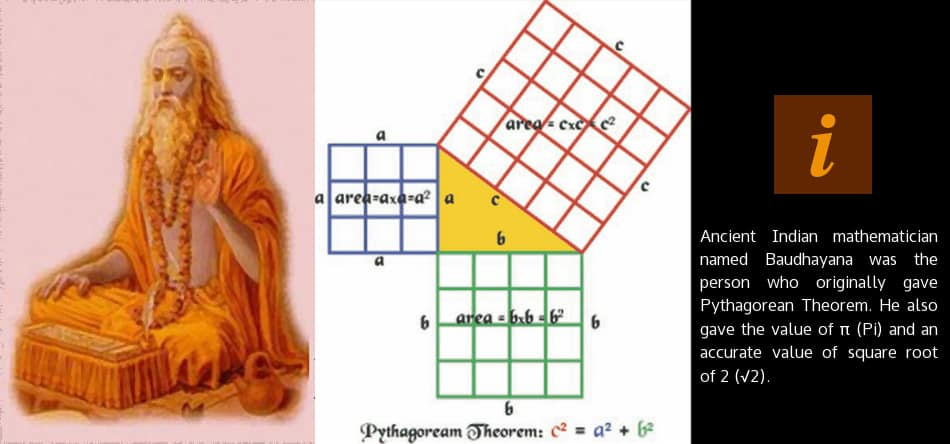

Baudhayana
Birth Date: 800 BCE (or BC)
Area of interest
- Mathematics
Who was Baudhayana?
Not much is known about Baudhayana. However, historians attach the date c. 800 BCE (or BC). Not even the exact date of death of this great mathematician is recorded. Some believe that he was not just a mathematician but in fact, he was also a priest and an architect of very high standards. he case of Baudhayana is one of the many examples where Greeks and other western civilizations took credit of the discoveries originally made by ancient Indians. Baudhayana in particular is the person who contributed three important things towards the advancements of mathematics: He gave us the theorem that became known as Pythagorean Theorem. Actually we should be calling it Baudhayana Theorem. He gave us the method of circling a square. He also gave us the method of finding the square root of 2. {kind=link}
The Pythagorean (Baudhayana) Theorem
Baudhayana wrote what is known as Baudhayana Sulbasutra. It is one of the earliest Sulba Sutras written. Now Sulba Sutras are nothing but appendices to famous Vedas and primarily dealt with rules of altar construction. In Baudhayana Sulbasutra, there are several mathematical formulae or results that told how to precisely construct an altar. In essence, Baudhayana Sulbasutra was more like a pocket dictionary, full of formulae and results for quick references. Baudhayana essentially belonged to Yajurveda school and hence, most of his work on mathematics was primarily for ensuring that all sacrificial rituals were performed accurately. One of the most important contributions by Baudhayana was the theorem that has been credited to Greek mathematician Pythagoras. There is an irony to this as well that we will discuss in a while.
Baudhayana’s Contribution towards Circling a Square and Pi
It was not just the Pythagorean Baudhayana Theorem that was first provided by Baudhayana. He even gave us the value of Pi (π). The Baudhayana Sulbasutra has several approximations of π that Baudhayana possibly used while constructing circular shapes. The various approximations of π that can be found in Baudhyana Sulbasutra are: $$\Pi =\frac { 676 }{ 225 } =3.004$$ $$\Pi =\frac { 900 }{ 289 } =3.114$$ $$\Pi =\frac { 1156 }{ 408 } =3.202$$ None of the values of π mentioned in Baudhayana Sulbasutra are accurate because the value of π is approximately 3.14159. However, the approximations that Baudhayana used wouldn’t really lead to major error during the construction of circular shapes in altars.